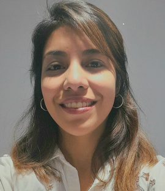

Ing. Gómez Micaela Agustina. MP: 1535/1
Ing. Agrimensora recibida de la Facultad de Ciencias Exactas, Físicas y Naturales, Universidad Nacional de Córdoba.
Experiencia en topografía de obra y mensuras urbanas, rurales, de posesión y subdivisiones. Relevamiento planialtimétrico y asesoramiento legal.